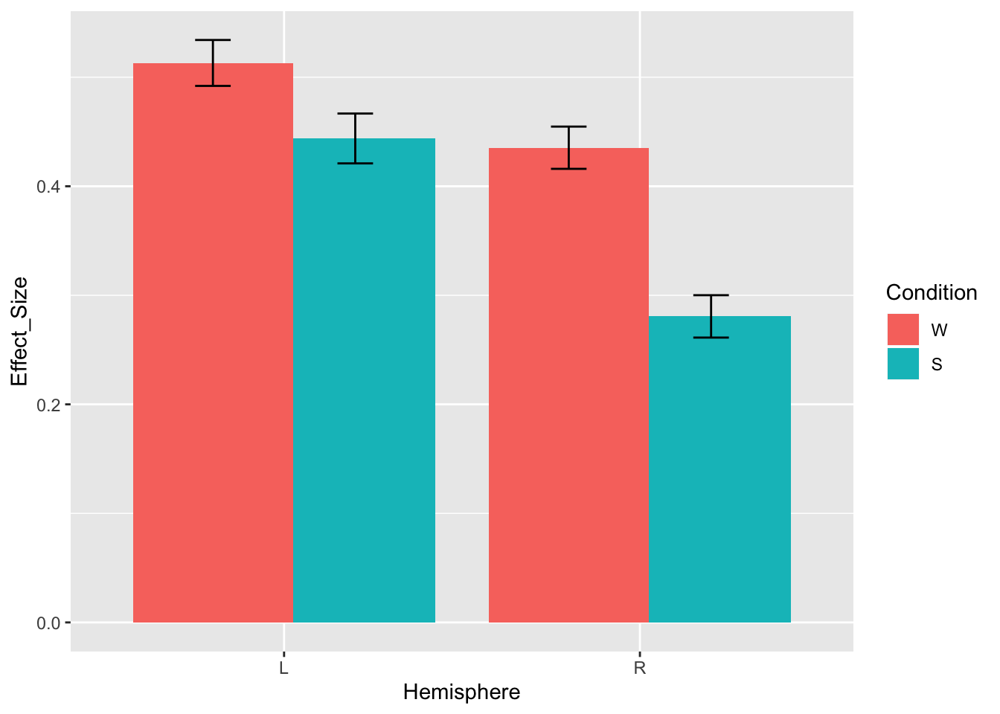

7 Plot
A quick plot to see what results we should be expecting if we look in both systems
ggplot(data)+
stat_summary(aes(x=System, y=Effect_Size, fill=Condition), fun="mean", geom="col", position=position_dodge())## Warning: Ignoring unknown parameters: fun## No summary function supplied, defaulting to `mean_se()
## boundary (singular) fit: see ?isSingular## Linear mixed model fit by REML. t-tests use Satterthwaite's method [
## lmerModLmerTest]
## Formula: Effect_Size ~ 1 + Condition * System + (1 + Condition * System |
## SubjectID) + (1 + Condition * System | Experiment) + (1 +
## Condition | Region)
## Data: data
##
## REML criterion at convergence: 53763
##
## Scaled residuals:
## Min 1Q Median 3Q Max
## -9.2310 -0.5470 -0.0439 0.4805 6.7886
##
## Random effects:
## Groups Name Variance Std.Dev. Corr
## SubjectID (Intercept) 0.14070 0.3751
## ConditionS 0.06761 0.2600 -0.04
## SystemMD 0.11282 0.3359 -0.14 -0.34
## ConditionS:SystemMD 0.12813 0.3580 -0.42 -0.49 0.09
## Experiment (Intercept) 0.01924 0.1387
## ConditionS 0.16692 0.4086 -0.60
## SystemMD 0.08390 0.2896 -0.60 0.13
## ConditionS:SystemMD 0.11689 0.3419 0.33 -0.87 0.37
## Region (Intercept) 0.04715 0.2171
## ConditionS 0.01966 0.1402 0.13
## Residual 0.28198 0.5310
## Number of obs: 31529, groups: SubjectID, 679; Experiment, 30; Region, 30
##
## Fixed effects:
## Estimate Std. Error df t value Pr(>|t|)
## (Intercept) 0.42712 0.08255 41.79255 5.174 6.11e-06 ***
## ConditionS 0.36598 0.09765 37.99753 3.748 0.000592 ***
## SystemMD -0.01757 0.10459 46.09996 -0.168 0.867311
## ConditionS:SystemMD -0.49086 0.09319 25.60580 -5.267 1.74e-05 ***
## ---
## Signif. codes: 0 '***' 0.001 '**' 0.01 '*' 0.05 '.' 0.1 ' ' 1
##
## Correlation of Fixed Effects:
## (Intr) CndtnS SystMD
## ConditionS -0.224
## SystemMD -0.728 0.069
## CndtnS:SyMD 0.088 -0.810 0.098
## convergence code: 0
## boundary (singular) fit: see ?isSingularRemember the intercept is always whatever you set to 0 so here that’s Language system and Sentences
so under ConditionW we have the simple effect of Condition: Words - Sentences but only for Language system
under SystemMD we have the simple effect of System: MD - Lang but only for Sentences
Sometimes you also want to know about some main effects
You can set your contrasts differently.
Now the intercept will represent the grand average
## boundary (singular) fit: see ?isSingular## Linear mixed model fit by REML. t-tests use Satterthwaite's method [
## lmerModLmerTest]
## Formula: Effect_Size ~ 1 + Condition * System + (1 + Condition * System |
## SubjectID) + (1 + Condition * System | Experiment) + (1 +
## Condition | Region)
## Data: data
##
## REML criterion at convergence: 53763
##
## Scaled residuals:
## Min 1Q Median 3Q Max
## -9.2311 -0.5470 -0.0439 0.4805 6.7886
##
## Random effects:
## Groups Name Variance Std.Dev. Corr
## SubjectID (Intercept) 0.12119 0.3481
## Condition1 0.05394 0.2323 -0.21
## System1 0.15562 0.3945 0.05 -0.17
## Condition1:System1 0.12830 0.3582 -0.33 0.22 0.53
## Experiment (Intercept) 0.02525 0.1589
## Condition1 0.07541 0.2746 0.64
## System1 0.14975 0.3870 0.59 0.02
## Condition1:System1 0.11598 0.3406 0.06 -0.67 0.72
## Region (Intercept) 0.05608 0.2368
## Condition1 0.01963 0.1401 0.42
## Residual 0.28199 0.5310
## Number of obs: 31529, groups: SubjectID, 679; Experiment, 30; Region, 30
##
## Fixed effects:
## Estimate Std. Error df t value Pr(>|t|)
## (Intercept) 0.47878 0.05883 52.36543 8.139 7.32e-11 ***
## Condition1 0.12068 0.06587 28.98911 1.832 0.0772 .
## System1 -0.26311 0.11860 54.14414 -2.218 0.0307 *
## Condition1:System1 -0.49089 0.09292 25.85691 -5.283 1.62e-05 ***
## ---
## Signif. codes: 0 '***' 0.001 '**' 0.01 '*' 0.05 '.' 0.1 ' ' 1
##
## Correlation of Fixed Effects:
## (Intr) Cndtn1 Systm1
## Condition1 0.332
## System1 -0.058 -0.044
## Cndtn1:Sys1 -0.064 -0.491 0.480
## convergence code: 0
## boundary (singular) fit: see ?isSingularnotice that the intercept and main effects are different but the interaaction is the same.
7.1 Interpretation
Words elicited (marginally) smaller effect sizes than sentences overall (b=-0.12) and effect sizes were smaller on average in the MD system (b=-0.26). Critically, there was a significant interaction such that the Sentences elicited a larger effect than Word but only in the language system
Here it might actually make more sens to dummy code…but you just have to know what you’re measuring